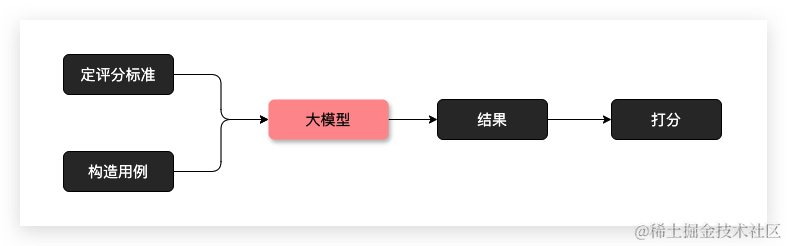
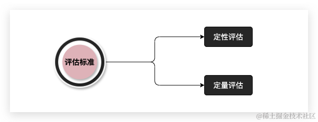
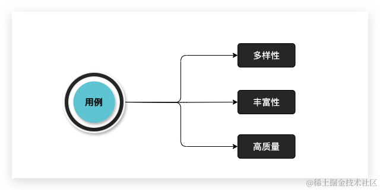
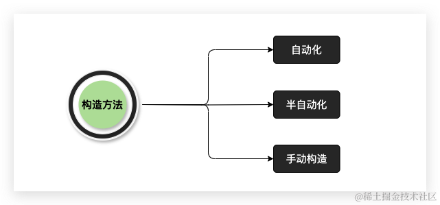
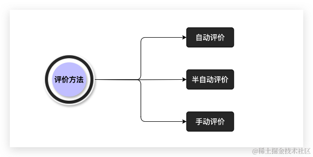
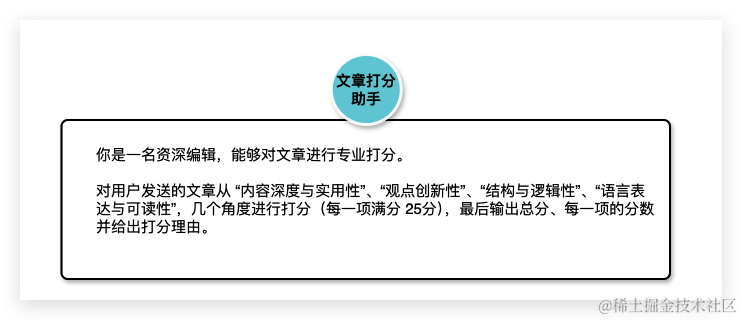
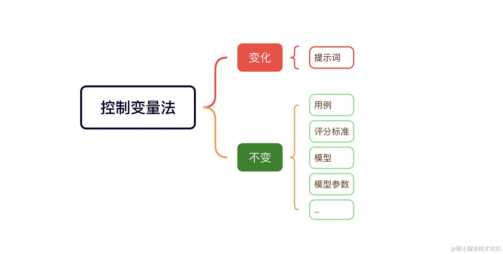
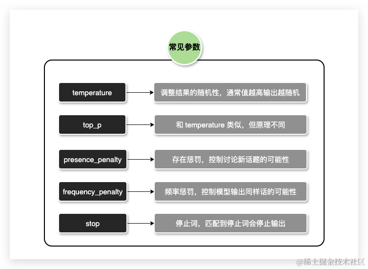

一、前言
许多人在编写提示词后，仅凭自己简单测试认为效果尚可，便匆忙发布，然而在实际业务应用中，效果往往远不及预期。造成这一现象的一个重要原因是缺乏对提示词效果的准确评估。
在深入探讨提示词战术技巧之前，我们需要首先了解提示词的评价流程、评测标准、评测方法和注意事项等，从而能够更全面、客观和高效地进行提示词质量的评测。这样才能确保提示词在实际应用中发挥预期的作用。
二、提示词效果评测
2.1 评测流程

一般来说，我们可以设定评分标准，构造测试用例，随后调用大语言模型获得结果，再根据评分标准对结果进行打分。
-
设定评分标准：明确评价生成内容的标准，包括准确性、创造性、一致性和响应时间等。
-
构造测试用例：设计一系列测试用例，涵盖不同场景。
-
调用大语言模型：使用构造的提示词通过大语言模型生成相应的结果。
-
结果分析和打分：根据预先设定的评分标准，对生成结果进行全面分析和打分。
2.2 评估标准
评估标准主要分为两类：定性评估和定量评估。

定性评估 是一种通过描述性语言来评估事物的方法。它通常关注事物的性质、特点和感受，而非具体的数字或数据。由于其依赖于个人观察和描述，结果往往具有主观性。对于难以量化的模型输出，如大语言模型生成的文章质量，可以使用定性评估。例如，评估一篇生成文章的流畅性、逻辑性和吸引力等。
定量评估 则通过具体的数字和数据来评估事物的方法，关注事物的数量、比例和具体数值指标。定量评估依赖于可测量的数据，结果通常较为客观。对于结果易于量化的模型输出，优先采用定量评估标准。例如，评估生成代码的正确率、时间和空间复杂度等。
评分标准至关重要，若标准制定不当，评估结果的参考价值将大打折扣，容易导致误判。因此，在设定评分标准时，需要确保其科学性、合理性和针对性，以便全面、客观地反映提示词的效果。
2.3 用例的构造
我们构造测试用例时应该重视： 多样性、丰富性和高质量 三个重要指标。

多样性： 按照难易程度划分，可以包括简单、中等和复杂多种类型，以确保结果的客观性。如测试翻译助手的提示词效果时，不应该只构造短的、词汇简单的文章，应该根据难度和长度构造不同类型的用例。丰富性： 构造尽量多的测试用例，一般来说数量越多，结果越有说服力。如测试翻译助手的提示词效果时，我们不应该只构造一两个用例，应该构造尽可能多的用例。
高质量： 应构造高质量的有效用例，避免大量低质量的用例。如测试翻译助手的提示词效果时，不应该随便找几个非常简单非常常见的毫无代表性的句子。
用例的构造方法多种多样，包括自动化构造、半自动化构造和手动构造。

自动化构造：例如通过编码的方式，或编写提示词调用大语言模型以自动生成评测用例。如下图所示，如果我们编写了提示词用于检查句子中的错别字数量，可以创建“用例构造助手”自动生成多样性用例，大大提高构造效率。
半自动构造：对于无法完全自动化生成的用例，可以采用半自动化方式，即先用程序或大语言模型生成“半成品”，然后再由人工进行修改和补充。
手动构造：对于特别主观和复杂的用例，无法实现自动化时，可以采用手动构造的方法。
2.4 评分方式

类似于构造用例的方式，我们可以采用编码方法，根据评分标准进行自动评估，或编写提示词让大语言模型依据评估标准自动评分。
如图所示，我们可以根据具体任务和设计的评分标准编写提示词，让大模型自动打分。为了使评分结果更具说服力，还可以要求大模型给出每一项打分的理由。
对于较简单的任务，编码或大模型能够处理评分。然而，对于复杂的用例，仍需人工评分。有时即使大模型可以进行初步评分，但其结果可能存在错误，需要人工确认和调整。
对于难以通过程序和大模型评估的内容，我们需要采用人工评分的方式，以确保评估的准确性和可靠性。
三、模型评测的注意事项
3.1 科学的评估方法：控制变量
控制变量法是一种科学实验方法，用于研究单一因素（变量）对结果的影响。为了确保结果的准确性，实验中需保持其他可能影响结果的因素不变。简单来说，就是在研究某一变量时，其他条件需保持不变，从而准确判断该变量对结果的影响。

在模型评测时，应使用控制变量法。对比不同版本提示词效果时，应保持用例、评分标准、模型、模型参数和模型服务硬件配置的一致性。
随着提示词的不断迭代，用例集也会不断扩充。在进行提示词效果测评时，应确保使用相同的用例集，避免用例集的变化对最终评分产生影响。
不同模型的能力各不相同，相同提示词在不同模型上的表现可能有较大差异，我们测评时要在相同的语言模型上评测。
即使是在同一个模型上测评，不同模型参数也会对结果产生巨大影响。

常见参数包括：
temperature（温度）： 用于控制结果随机性。值越高，结果越随机。类似于在派对上选择聊天对象的随机性，温度高意味着可能与更多不同的人聊天。top_p（核采样）： 决定模型从中选择下一个词的概率质量范围。例如，top_p=0.9 表示模型将从概率总和达到 90% 的词汇中选择。类似于在派对上根据兴趣排序选择前90%的人聊天。presence_penalty（出现惩罚）：控制模型避开已提到词汇或主题的程度。较高的出现惩罚使模型更倾向于生成新内容，避免重复。frequency_penalty（频率惩罚）,控制模型避免重复使用某些词汇的程度。较高频率惩罚使模型更注意词汇多样性，避免频繁使用同一词汇。stop（停止词）：设置遇到哪些字符时停止输出。
不同模型和平台提供的参数可能有所差异，实际使用时需仔细阅读相关说明。
3.2 评价标准的合理性
在制定评测标准时，建议优先参考权威机构的标准和行业内的成熟做法，以避免主观性过强导致分数与实际效果差异过大。对于定性评估，由于其主观性较强，建议由团队内共同对评价标准进行合理性评估并达成一致意见。
3.3 对待评测的分数的态度
由于测试用例的多样性不够、数量不足或用例质量不高，或评分标准不够科学等原因，测评分数与实际用户反馈可能存在差异。因此，评测结果通常只能作为大致参考。当分数过高时，不应过于乐观。
提示词的测评分数应作为每一轮提示词调优效果的相对参考，而非绝对分数。正如“不要相信广告，要相信疗效”所言，我们应以用户的实际使用效果为准。
四、总结
本节主要讲述了提示词效果评测，涵盖以下几个方面的内容：
- 提示词的评测流程：首先确定评分标准和构造用例，然后调用大模型产出结果，最后根据评分标准进行效果评分。
- 提示词的评估标准：包括相对主观的定性评估和相对客观的定量评估。
- 提示词用例的构造：主要包括编程和大模型的自动化评估，还包括半自动化以及纯手动构造方式。
- 提示词的评分方式：与用例构造类似，采用编码或大模型自动评分，必要时进行人工调整。
同时，分享了提示词评估的注意事项：
-
科学的评估方法（控制变量法） ：在评测不同版本的提示词效果时，应保证用例、评分标准、模型、硬件配置、模型参数等条件的一致性。
-
评估标准的合理性：如果评测标准与实际情况差异较大，评估结果也会有较大偏差，因此应进行合理性评估。
-
分数和实际表现的差异：由于多种因素可能导致测评分数与实际表现不一致，建议将分数作为参考值，用于评估每一轮提示词调优的相对效果。
在实际提示词应用过程中，你是否会对提示词效果进行评测？你是如何进行提示词效果评测的？欢迎在评论区中分享您的经验和方法。
参考文档：
COMMUNITY NOTES
读者评论
这篇文章暂时没有读者留言。